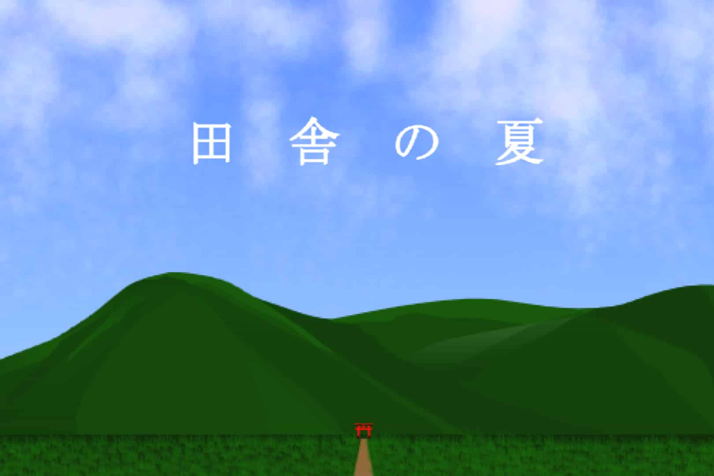

田舎の夏

リンク
以下のリンクから実際に作品をプレイすることができます。
SCRATCHで見る TurboWarpで見る YouTubeで見る使用方法
カスタマイズモード
全部見終わった後に、各音の大きさ、背景の明るさ、透明度などを自分の好きなようにカスタマイズして調整できます。
スペースキーを押しながら旗を押すとこのカスタマイズモードにすぐ移動することができます。
こだわったところ
雲のリアルさにこだわりました。雲は薄いペンで重ねて描画していますが、その時に点同士をどれほど近づけるかの調節が難しかったです。